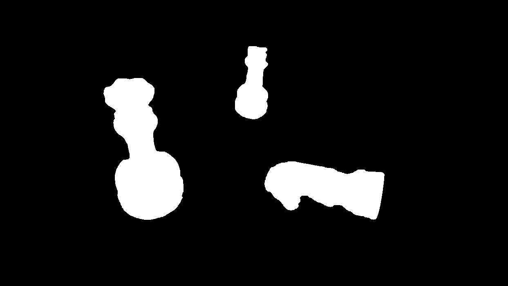

Computer Vision
Chess Piece Recognition
Brandon Boos and Guilherme Meira
Group E
The problem
- Detect black chess pieces on an image
- Various different approaches are available
Color thresholding
- Detect black blobs
- Simple implementation
Can't tell the difference between pieces
Feature matching

- Good algorithms for textured objects
- SIFT, SURF, ORB
Our objects don't have textures
B.O.L.D.
Bunch of Lines Descriptor
F. Tombari, A. Franchi, L. Di Stefano, “BOLD features to detect texture-less objects”, ICCV 2013
- Developed for textureless objects
- Also performs well on textured objects
- Closed source implementation available upon request
- We developed our own implementation with OpenCV
Model image
- Captured on a white background

Preprocessing
- Convert to grayscale
- Gaussian blur to remove some noise
Pyramid
- Capture features on different scales
Gradient
- Compute the \(x\) and \(y\) gradients (derivatives)
- We use the Scharr kernel
\(G_{x} = \begin{bmatrix}-3 & 0 & 3 \\ -10 & 0 & 10 \\ -3 & 0 & 3\end{bmatrix} G_{y} = \begin{bmatrix}-3 & -10 & -3 \\ 0 & 0 & 0 \\ 3 & 10 & 3\end{bmatrix}\)
Line extraction
- Find lines on the object
- We use the LSD algorithm from OpenCV
Nearest neighbor search
- For each line, find \(k\) closest lines
- We use FLANN for the \(k\)-nearest neighbor search
- We can use multiple \(k\)s
- For each pair of lines, compute \(\alpha\) and \(\beta\)
BOLD descriptors
$$ \begin{matrix} \vec{t}_{i\,j} = \vec{m}_{j}-\vec{m}_{i} & sign(\vec{s}_{i}) = \frac{(\vec{e}_{i\,2}-\vec{e}_{i\,1})\times \vec{g}(\vec{m}_{i})}{|(\vec{e}_{i\,2}-\vec{e}_{i\,1})\times \vec{g}(\vec{m}_{i})|}\cdot \vec{n}\\ \vec{t}_{j\,i} = \vec{m}_{i}-\vec{m}_{j} & \vec{s}_{i} = sign(\vec{s}_{i}) (\vec{e}_{i\,2}-\vec{e}_{i\,1}) \end{matrix} $$
\( \begin{matrix} \alpha^{*} = arccos\left(\frac{\vec{s}_{i}\cdot \vec{t}_{i\,j}}{|\vec{s}_{i}|\cdot|\vec{t}_{i\,j}|}\right) \\ \beta^{*} = arccos\left(\frac{\vec{s}_{j}\cdot \vec{t}_{j\,i}}{|\vec{s}_{j}|\cdot|\vec{t}_{j\,i}|}\right) \\ \alpha = \begin{cases} \alpha^{*} & \frac{\vec{s}_{i}\times\vec{t}_{i\,j}}{|\vec{s}_{i}\times\vec{t}_{i\,j}|}\cdot\vec{n} = 1 \\ 2\,\pi-\alpha^{*} & otherwise \end{cases} \\ \beta = \begin{cases} \beta^{*} & \frac{\vec{s}_{j}\times\vec{t}_{j\,i}}{|\vec{s}_{j}\times\vec{t}_{j\,i}|}\cdot\vec{n} = 1 \\ 2\,\pi-\beta^{*} & otherwise \end{cases} \end{matrix} \)
Histogram
- \(\alpha\) and \(\beta\) values are accumulated into 2D histograms
- Values are added to the histogram using interpolation
- One histogram is produced for each detected line
- Histogram is converted to a feature vector
Model image
Pick a reference point
- Any point should work
- It's preferable to pick a point inside the object
- We simply average the midpoints of the detected lines
Build the R-table
Scene image
Matching process
- The match is considered valid if \(\frac{d_{1}}{d_{2}} < 0.8\)
- The rotation and scaling that are closest to the ones found on the Hough Matrix are considered the correct ones
Result
Differentiating objects
90-degree rotation
Multiple rotated objects
Rotation and occlusion
Not always perfect
Rotation, occlusion, multiple objects...
hank You!